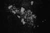

|
|
(For further information on spectroscopy, see:
http://speclab.cr.usgs.gov)
TITLE: Talc TL2702 DESCRIPT
DOCUMENTATION_FORMAT: MINERAL
SAMPLE_ID: TL2702
MINERAL_TYPE: Phyllosilicate
MINERAL: Talc
FORMULA: Mg3Si4O10(OH)2
FORMULA_HTML: Mg3Si4O10(OH)2
COLLECTION_LOCALITY: Colorado
ORIGINAL_DONOR: Colorado School of Mines
CURRENT_SAMPLE_LOCATION: CSES/CIRES, Univ. of CO, Boulder
ULTIMATE_SAMPLE_LOCATION: CSES/CIRES, Univ. of CO, Boulder
SAMPLE_DESCRIPTION:
IMAGE_OF_SAMPLE:

END_SAMPLE_DESCRIPTION.
XRD_ANALYSIS:
Pure (?).
Kruse, F.A., and P.L. Hauff, eds., 1992, The IGCP-264 Spectral Properties Database. IUGS/UNESCO, Special Publication, 211 p., (in press).
40kV - 30mA, 6.5-9.5 keV
File: talc2702.mdi (smear on quartz plate)
References: JCPDS #3-0588, 19-0770, 29-1493
Found: Talc 2M
Sought but not found: willemsite, pyrophyllite
Comment: The (002), (004), and (006) basal reflections are sharp
and intense, but the non-basal reflections are weak, broad, and
adjacent peaks are not resolved. All pattern reflections can be
indexed by comparison with the JCPDS talc 2M reference patterns
#13-0558 or 19-0770.
END_XRD_ANALYSIS.
COMPOSITIONAL_ANALYSIS_TYPE: # XRF, EM(WDS), ICP(Trace), WChem
COMPOSITION_TRACE:
COMPOSITION_DISCUSSION:
END_COMPOSITION_DISCUSSION.
MICROSCOPIC_EXAMINATION:
Bimodal grain size distribution:
mode 1: 550 µm @ 90 vol%
mode 2: 15 µm @ 10 vol%
average grain size= 522 µm
Mottled extinction, very soft, no visible impurities, all consistent with this sample being talc. Smaller grains coat 30% surface of larger grains. G. Swayze.
END_MICROSCOPIC_EXAMINATION.
SPECTROSCOPIC_DISCUSSION:
END_SPECTROSCOPIC_DISCUSSION.
SPECTRAL_PURITY: 1a2_3_4_ # 1= 0.2-3, 2= 1.5-6, 3= 6-25, 4= 20-150 microns
| LIB_SPECTRA_HED: | where | Wave Range | Av_Rs_Pwr | Comment |
|---|---|---|---|---|
| LIB_SPECTRA: | splib04a r 4708 | 0.2-3.0µm | 200 | g.s.= |
| LIB_SPECTRA: | splib05a r 6496 | 0.2-3.0µm | 200 | g.s.= |
| LIB_SPECTRA: | splib06a r 21613 | g.s.= |
{kind=link}